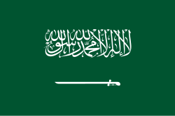

Pakistan,[f] officially the Islamic Republic of Pakistan,[g] is a country in South Asia.
It is the fifth-most populous country, with a population of over 241.5 million,[d] having the second-largest Muslim population as of 2023.
Islamabad is the nation's capital, while Karachi is its largest city and financial centre.
Pakistan is the 33rd-largest country by area.
Canada[a] is a country in North America.
Its ten provinces and three territories extend from the Atlantic Ocean to the Pacific Ocean and northward into the Arctic Ocean, making it the second-largest country by total area, with the longest coastline of any country.
Its border with the United States is the longest international land border.
The country is characterized by a wide range of both meteorologic and geological regions.
With a population of over 41 million, it has widely varying population densities, with the majority residing in its urban areas and large areas being sparsely populated.
Its capital is Ottawa and its three largest metropolitan areas are Toronto, Montreal, and Vancouver.

Saudi Arabia,[d] officially the Kingdom of Saudi Arabia (KSA),[e] is a country in West Asia. Located in the centre of the Middle East, it covers the bulk of the Arabian Peninsula and has a land area of about 2,150,000 km2 (830,000 sq mi), making it the fifth-largest country in Asia, the largest in the Middle East, and the twelfth-largest in the world. It is bordered by the Red Sea to the west; Jordan, Iraq, and Kuwait to the north; the Persian Gulf, Bahrain, Qatar and the United Arab Emirates to the east; Oman to the southeast; and Yemen to the south. The Gulf of Aqaba in the northwest separates Saudi Arabia from Egypt and Israel.[15][16] Saudi Arabia is the only country with a coastline along both the Red Sea and the Arabian Gulf, and most of its terrain consists of arid desert, lowland, steppe, and mountains. The capital and largest city is Riyadh; other major cities include Jeddah and the two holiest cities in Islam, Mecca and Medina. With a population of 33.7 million, Saudi Arabia is the sixth most populous country in the Arab world.
More about Saudi ArabiaTurkey,[a] officially the Republic of Türkiye,[b] is a country mainly located in Anatolia in West Asia, with a smaller part called East Thrace in Southeast Europe. It borders the Black Sea to the north; Georgia, Armenia, Azerbaijan, and Iran to the east; Iraq, Syria, and the Mediterranean Sea to the south; and the Aegean Sea, Greece, and Bulgaria to the west. Turkey is home to over 86 million people;[8] most are ethnic Turks, while Kurds are the largest ethnic minority.[12] Officially a secular state, Turkey has a Muslim-majority population. Ankara is Turkey's capital and second-largest city. Istanbul is its largest city and economic center. Other major cities include İzmir, Bursa, and Antalya.
More about Türkiye